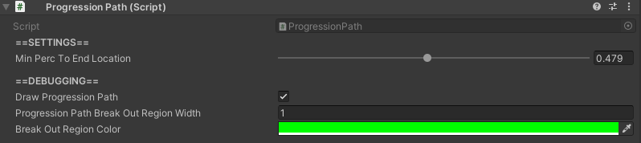

Progression Paths

How to Locate
The ProgressionPath component is located on the same GameObject as any WaypointLocation that has Has Progression Path set to true.
If a ProgressionPath component is not there, it needs to be added manually.
Settings
| Setting | Description |
|---|---|
| Min Perc To End Location |
Min percent of the progression path an agent must always travel before breaking out of the progression path. |
| Draw Progression Path |
Toggles whether or not the progression path visual should appear. |
| Progression Path Break Out Region Width |
Only applicable if Draw Progression Path is true.Width of the visual for the break out region of the progression path. |
| Break Out Region Color |
Only applicable if Draw Progression Path is true.Color of the visual for the break out region of the progression path. |
Tips
ProgressionPathsmust also have aLerpableLinecomponent attached to the same GameObject as they are. If it is not there, it must be added manually.